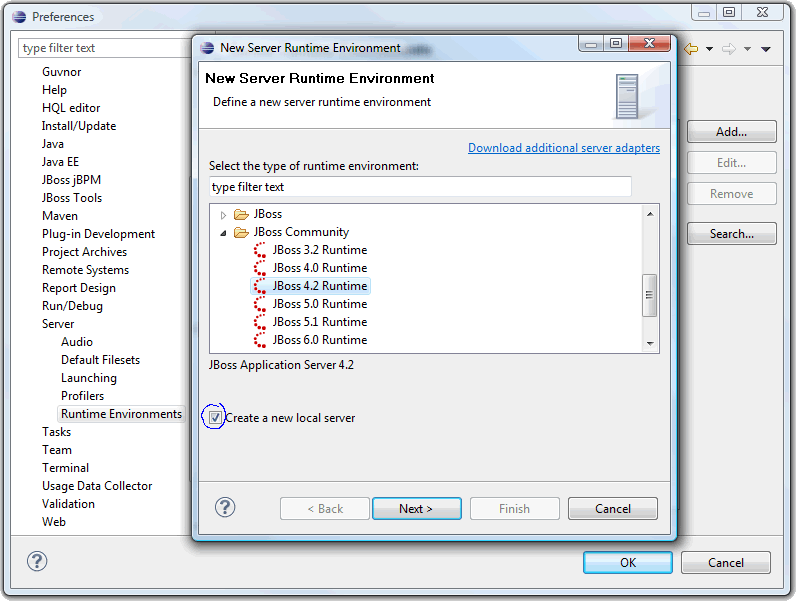
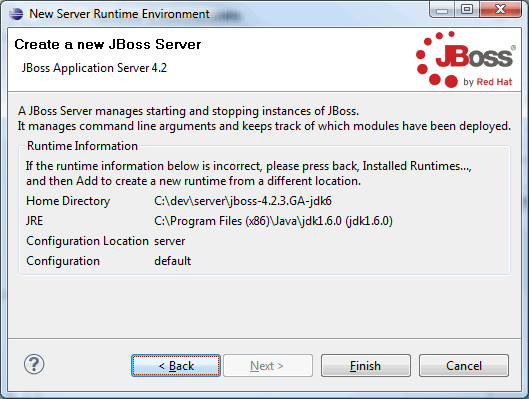
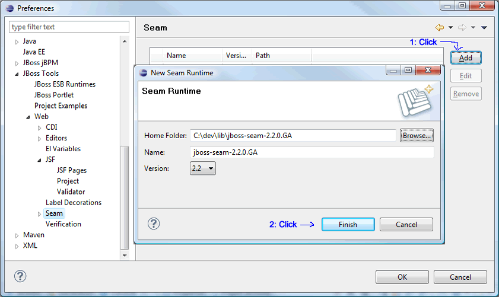
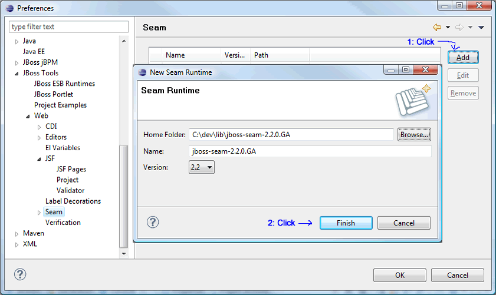
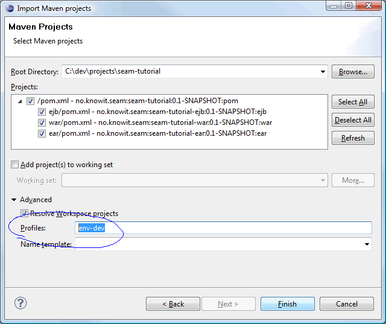
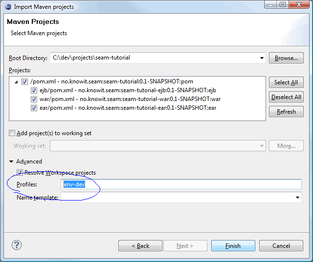

Maven, Eclipse and JBoss Tools
This tutorial explains how to use the Eclipse IDE and JBoss Tools with a Mavenized Seam project.
Shortcuts
The shortcuts are listed here so we don't have to type the tedious file paths over and over again in this document.
${JBOSS_HOME}- refers to Jboss installation folder, e.g. C:\servers\jboss-4.2.3.GA${JBOSS_CONFIG}- refers to the configuration directory e.g. C:\servers\jboss-4.2.3.GA\default${JBOSS_DEPLOY}- refers to the JBoss deploy folder, e.g. C:\servers\jboss-4.2.3.GA\default\deploy${PROJECT}- the project root folder, i.e. seam-maven-refimpl${SEAM_REFIMPL}- the folder where the reference project, i.e. seam-refimpl, is installed on your computer${SEAM_TUTORIAL}- the folder where the tutorial project, i.e. seam-tutorial, is installed on your computer
Download and install software:
- jdk-1.5 or jdk-1.6
- Eclipse Ganymede 3.4 (with WTP installed)
- Maven 2.0.9 or later.
Note: Do not use Maven 2.1.0, it has a serious bug, see the${PROJECT}/doc/maven-2.1.0-bugfolder for an explanation. - Maven Eclipse plugin (0.9.8 or later)
- SubClipse-1.6.x, Team Provider plug-in providing support for Subversion within the Eclipse IDE
- JBoss Seam 2.x
- JBoss Tools 3
- Jboss 4.2.3.GA Application Server or later.
Configure Workspace
-
Create an empty workspace folder, e.g. C:/ide/workspaces
Note: Do not use your project folder, ${SEAM_TUTORIAL}, as a workspace folder. -
Start Eclipse and select the newly created workspace folder.

Set editors to UTF-8
- Make shure that all files are saved with UTF-8 encoding


Configure The Maven Eclipse Plugin
-
Make sure that Eclipse is running on a JDK and not a JRE.

-
Install the Maven Eclipse plugin.
 According to
this blog there is a problem when running embedded Maven from Eclipse, so we need to configure
Eclipse to use an external Maven installation. Select Window>Preferences,
navigate to Maven>Installations and edit details as outlined in the image below.
According to
this blog there is a problem when running embedded Maven from Eclipse, so we need to configure
Eclipse to use an external Maven installation. Select Window>Preferences,
navigate to Maven>Installations and edit details as outlined in the image below.

Create a WTP Server Reference
- Install the Jboss Application Server, install JBoss Tools 3. The JBoss Seam documentation explains these steps in detail. The screenshots below outlines the steps needed to configure a WTP server reference for JBoss 4.2.3.
- In Preferences, navigate to Server>Runtime Environments. Click Add.... Browse to the folder named JBoss Community and select JBoss 4.2 Runtime. 
-
Click Next, name the server runtime, e.g. JBoss 4.2.3-jdk6 Runtime, and point the
Home Directory to the folder where you installed the server. Select the
default configuration.

- Click Next, name the server, e.g. JBoss 4.2.3-jdk6 Server, and click Finish. 
-
Exit Preferences and switch to the JBoss perspective.

-
Doubleclick on the JBoss 4.2.3-jdk6 Server to open the JBoss 4.2.3-jdk6 Server Overview tab.

-
Verify that the Use the JBoss deploy folder radio button is checked.

-
Start the server.

-
The console output should look something like the screeshot below.

- Stop the server.
Configure JBoss Tools
JBoss Tools is a perfect match for Seam devolpers using Maven and the Elipse IDE. It helps you with a a lot of tasks you otherwise would have used hours and days to complete. The Tools is not essential for developing a Mavenized Seam application, but it has a lot of useful wizards and automated tasks. If you have an existing database then you can use the Tools to generate a full CRUD application with entities, Seam framework classes (home- and list classes) and a user interface with navigation an drilldown. For a database with ten tables this will take no more than 30 seconds to complete. Show me a RoR that can do that! If you use the Tools to create an entity then the Tools will automatically generate the corresponding Seam framework classes as well as a xhtml page with CRUD functionality.
If you really want to learn the mecanisms behind Seam, then it is definitively worth the effort setting up the tools. Play with the tools and study the code that the various tools generates.
-
Unpack JBoss Seam 2.1 to a folder of your
choice, e.g.
C:/ide/libs/jboss-seam-2.1.1.GA. Follow the screenshots. 


Define a Data Source
If you plan to use JBoss Tools to do reverse engeneering, then you need to define and connect to a datasource. The screenshots below outlines one possible way to accomplish this.
- Download and install necessary software:
- Copy mysql-connector-java-*-bin.jar to
${JBOSS_CONFIG}/lib(delete any other mysql-connector-java-*-bin.jar file if exist). -
Start the database server and create schema
"refimpl_db", use e.g. the MySql Administrator GUI.
Or, if you are a MySql macho, you can type the following SQL DDL by hand:
CREATE DATABASE refimpl_db CHARACTER SET utf8 COLLATE utf8_general_ci;
Note: Allways use UTF8 for i18n. -
In Preferences, navigate to Data Management>Connectivity>Driver Definitions.
Click Add... to add a new driver.


-
Open the Database Development perspective. In Data Source Explorer
right click the Databases folder and select New...


Import a Mavenized Seam Project
To import a mavenized Seam project to Eclipse (i.e. a project that is already installed on your computer), follow these steps:
-
Export the
seam-refimplproject to a folder of your choice, the${SEAM_TUTORIAL}folder. - Modify the POMs and switch to development mode
-
Navigate to the
${SEAM_TUTORIAL}folder using a command shell and execute maven commands:
mvn clean -Punexplode
mvn install -Pexplode (remember to point the server to the correct deploy folder in profiles.xml)
mvn eclipse:eclipse -DdownloadSources=true -DdownloadJavadocs=true
mvn eclipse:m2eclipse
The last Maven command will generate the Eclipse.projectand.classpathfiles that now makes the project a valid Eclipse project.
Note: Them2eclipseplugin seems to be a bit unpredictable when it comes to downloading sourcecode and javadocs for the projects dependencies. If you find that sourcecode and javadocs are missing for some dependencis then try to runmvn eclipse:eclipse -DdownloadSources=true -DdownloadJavadocs=true -
Import the project:

 
You will notice a build error in the Maven console:

You will notice a build error in the Maven console:

Build errors for seam-tutorial-ear; org.apache.maven.lifecycle.LifecycleExecutionException: Invalid or missing parameters: [Mojo parameter [name: 'outputDirectory'; alias: 'null'], Mojo parameter [name: 'resources'; alias: 'null']] for mojo: org.apache.maven.plugins:maven-resources-plugin:2.3:copy-resources
We fix :-) Modify Maven properties for parent project; seam-tutotrial: Modify Maven properties for ear module; seam-tutotrial-ear:
Modify Maven properties for ear module; seam-tutotrial-ear:
 Modify Maven properties for ejb and war modules; seam-tutotrial-ejb and seam-tutotrial-war:
Modify Maven properties for ejb and war modules; seam-tutotrial-ejb and seam-tutotrial-war:
 Now we have fixed and the build errors should be gone :-))
Now we have fixed and the build errors should be gone :-))
-
Create a Maven
install -Pexploderun configuration:
The Maven install goal does not work from Eclipse. You should read this blog and follow the screenshots there and here to fix the problem.

[INFO] Executing tasks [echo] Exploding to C:/ide/server/jboss-4.2.3.GA/server/default/deploy/seam-tutorial-ear.ear [delete] Directory C:\ide\server\jboss-4.2.3.GA\server\default\deploy\seam-tutorial-ear.ear cannot be removed using the file attribute. Use dir instead. [sync] Copying 16 files to C:\ide\server\jboss-4.2.3.GA\server\default\deploy\seam-tutorial-ear.ear [sync] Copying C:\ide\projects\seam-tutorial\ear\target\seam-tutorial-ear-0.1-SNAPSHOT\seam-tutorial-war-0.1-SNAPSHOT.war\WEB-INF\jboss-web.xml to C:\ide\server\jboss-4.2.3.GA\server\default\deploy\seam-tutorial-ear.ear\seam-tutorial-war-0.1-SNAPSHOT.war\WEB-INF\jboss-web.xml .... [sync] Copying C:\ide\projects\seam-tutorial\ear\target\seam-tutorial-ear-0.1-SNAPSHOT\seam-tutorial-war-0.1-SNAPSHOT.war\META-INF\maven\no.knowit.seam\seam-tutorial-war\pom.properties to C:\ide\server\jboss-4.2.3.GA\server\default\deploy\seam-tutorial-ear.ear\seam-tutorial-war-0.1-SNAPSHOT.war\META-INF\maven\no.knowit.seam\seam-tutorial-war\pom.properties [sync] Copying C:\ide\projects\seam-tutorial\ear\target\seam-tutorial-ear-0.1-SNAPSHOT\META-INF\jboss-app.xml to C:\ide\server\jboss-4.2.3.GA\server\default\deploy\seam-tutorial-ear.ear\META-INF\jboss-app.xml [INFO] Executed tasks [INFO] [install:install] [INFO] Installing C:\ide\projects\seam-tutorial\ear\target\seam-tutorial-ear.ear to C:\Documents and Settings\Leif\.m2\repository\no\knowit\seam\seam-tutorial-ear\0.1-SNAPSHOT\seam-tutorial-ear-0.1-SNAPSHOT.ear [INFO] [INFO] ------------------------------------------------------------------------ [INFO] Reactor Summary: [INFO] ------------------------------------------------------------------------ [INFO] seam-tutorial-parent .................................. SUCCESS [2.875s] [INFO] seam-tutorial-ejb 0.1-SNAPSHOT ........................ SUCCESS [3.031s] [INFO] seam-tutorial-war 0.1-SNAPSHOT ........................ SUCCESS [2.016s] [INFO] seam-tutorial-ear 0.1-SNAPSHOT ........................ SUCCESS [7.703s] [INFO] ------------------------------------------------------------------------ [INFO] ------------------------------------------------------------------------ [INFO] BUILD SUCCESSFUL [INFO] ------------------------------------------------------------------------You can run the goal as needed by selecting theRun As > Maven buildfrom the project menu. Start the server:
A successful deploy should look like this in the Console log:
Start the server:
A successful deploy should look like this in the Console log:
 Open a browser and point the URL to
http://localhost:8080/seam-tutorial
Open a browser and point the URL to
http://localhost:8080/seam-tutorial
-
Set up Maven Builder:
You must set up a Maven builder to execute the explode profile during the edit- compile cycle.

Note: Experiment with the
Base directoryvariable. If you use${project_loc}then the builder will run only on the sub project that contains the modified file - resulting in a faster build cycle. Test the Builder:
Test the Builder:
Open a java class, e.g.Authenticator.java. Modify the source, save and check the console output:... [INFO] [antrun:run {execution: ejb-process-classes}] [INFO] Executing tasks [copy] Copying 1 file to C:\ide\server\jboss-4.2.3.GA\server\default\deploy\seam-tutorial-ear.ear\seam-tutorial-ejb-0.1-SNAPSHOT.jar [copy] Copying C:\ide\projects\seam-tutorial\ejb\target\classes\org\jboss\seam\example\session\Authenticator.class to C:\ide\server\jboss-4.2.3.GA\server\default\deploy\seam-tutorial-ear.ear\seam-tutorial-ejb-0.1-SNAPSHOT.jar\org\jboss\seam\example\session\Authenticator.class [INFO] Executed tasks ...Open a xhtml file, e.g.home.xhtml. Modify the source, save and check the console output:... [INFO] [antrun:run {execution: war-process-classes}] [INFO] Executing tasks [copy] Copying 1 file to C:\ide\server\jboss-4.2.3.GA\server\default\deploy\seam-tutorial-ear.ear\seam-tutorial-war-0.1-SNAPSHOT.war [copy] Copying C:\ide\projects\seam-tutorial\war\src\main\webapp\home.xhtml to C:\ide\server\jboss-4.2.3.GA\server\default\deploy\seam-tutorial-ear.ear\seam-tutorial-war-0.1-SNAPSHOT.war\home.xhtml [INFO] Executed tasks ...Check the Maven console as well:... Maven Builder: AUTO_BUILD ... C:\ide\projects\seam-tutorial ... Build type auto : process-classes ... mvn -Pexplode -B -Dmaven.test.skip=true -s "C:\Documents and Settings\Leif\.m2\settings.xml" process-classes ... Build type auto : process-classes ... Maven Builder: AUTO_BUILD ... Maven Builder: AUTO_BUILD ... C:\ide\projects\seam-tutorial ... Build type auto : process-classes ... mvn -Pexplode -B -Dmaven.test.skip=true -s "C:\Documents and Settings\Leif\.m2\settings.xml" process-classes ... Build type auto : process-classes
Configure JBoss Tools for a Project
This section explains the steps needed to configure JBoss Toos for a project.
Before you start,
keep a copy of the war/src/main/webapp folder or check the entire
project into SVN. The JBoss Tools is a bit too clever and modifies and adds various files during
configuration. After completion you can revert from SVN or restore the old webapp folder.
-
The parent module:
Should not be necessary to do anything here in connection with the Tools. Use default values.


-
The EAR module:
Should not be necessary to do anything here in connection with the Tools. Use default values.
-
The EJB module:


-
The WAR module:


That's it. Shouldn't take you more than a couple of minutes to complete!
Remember to remove any modifications made by the Tools and remove any possibe redundant files.
Run mvn clean -Punexplode and
mvn install -Pexplode.
Here is a sample of JBoss Tolls cleverness:

Play With the JBoss Tools
In this section we'll play with the tools.
tbd...